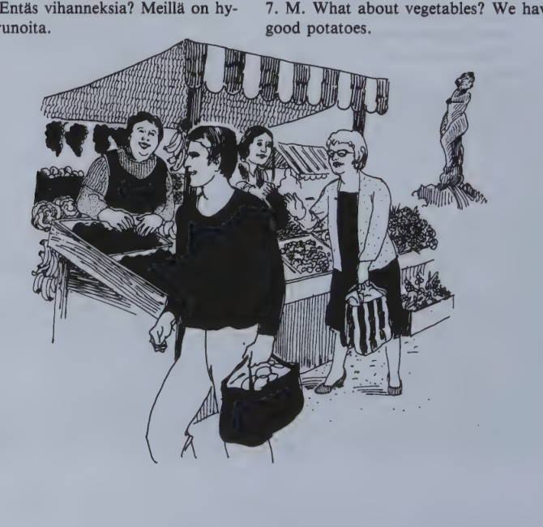
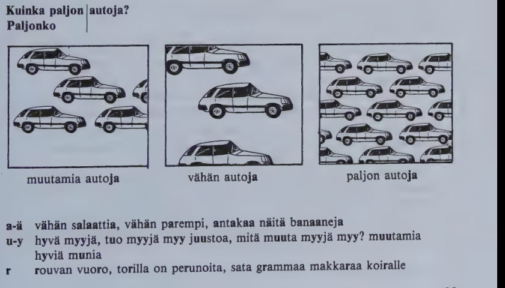

Kappale 21 / Lesson 21#
Kauppatorilla / In the Market Square#
Rouva Hill menee tanaan ostoksille Kauppatorille. Hanen taytyy ostaa hedelmia, vihanneksia ja kukkia.
Suomi |
English |
|---|---|
1. Myyja. Hyvia hedelmia, rouva! Omenia, appelsiineja, banaaneja! |
1. Market woman. Good fruit, madam! Apples, oranges, bananas! |
2. H. Mita hedelmat maksavat tanaan? |
2. H. What does the fruit cost today? |
3. M. Omenat maksavat … markkaa, appelsiinit … markkaa ja banaanit … markkaa kilo. |
3. M. Apples cost … marks, oranges … marks, and bananas … marks a kilo. |
4. H. No, mina otan puolitoista kiloa omenia. Ja muutamia banaaneja, viisi tai kuusi. Onko teilla viinirypaleita? |
4. H. Well, I’ll take one and a half kilos of apples. And a few bananas, five or six. Do you have any grapes? |
5. M. On, meilla on hyvia espanjalaisia rypaleita. |
5. M. Yes, we have some good Spanish grapes. |
6. H. Antakaa minulle niita puoli kiloa. |
6. H. Give me half a kilo of them. |
7. M. Entas vihanneksia? Meilla on hyvia perunoita. |
7. M. What about vegetables? We have good potatoes. |
8. H. Ei kiitos, tanaan mina en tarvitse perunoita. Mutta vahan salaattia ja tomaatteja. |
8. H. No thanks, I don’t need any potatoes today. But a little lettuce and tomatoes. |
9. M. Voi voi, rouva, salaatti on lopussa. |
9. M. Oh dear, madam, the lettuce has all gone. |
10. H. No, mina otan sitten vain tomaatteja. |
10. H. Well, I’ll just take some tomatoes, then. |
11. M. Isoja vai pieni? |
11. M. Big or small ones? |
12. H. Noita isoja. |
12. H. Some of those big ones. |
Torilla on paljon vihanneksia ja hedelmia. Siella on paljon ostajia ja myyjia, miehia ja naisia, helsinkilaisia ja turisteja, suomalaisia ja ulkomaalaisia, nuoria ja vanhoja. Ilma on ihana, aurinko paistaa. Rouva Hill kayvelee ja katselee. Lopuksi han ostaa vahan kukkia ja lahtee torilta.

Mita hedelmia te otatte?
A. Mina otan naita.
B. Mina otan noita.
C. Tassa on omenia, mina otan niita.
D. Mina en ota mitaan.

a-a vahan salaattia, vahan parempi, antakaa naita banaaneja
u-y hyva myyja, tuo myyja myy juustoa, mita muuta myyja myy? muutamia hyvia munia
r rouvan vuoro, torilla on perunoita, sata grammaa makkaraa koiralle
Kielioppia / Structural notes#
1. Partitive plural#
Part.pl. |
English |
Basic form pl. |
English |
|---|---|---|---|
Kaupassa on radio/i/ta. |
There are radios in the shop. |
Radiot maksavat paljon. |
Radios cost a lot. |
Miehella on laps/i/a. |
The man has children. |
Lapset ovat koulussa. |
The children are in school. |
Ostammeko omen/i/a? |
Shall we buy some apples? |
Ostamme nama omenat. |
We’ll buy these apples. |
Pekka myy silmalase/j/a. |
Pekka sells glasses. |
Tarvitsen silmalasit. |
I need (a pair of) glasses. |
The basic meaning of the partitive plural is indefinite number (in English often “some”, “any”, or a noun without an article), in contrast to the basic form which expresses definite number (“the children”, “these children”, “those children” etc.) or entity (“glasses” = a pair; “radios”, “all radios”, the whole category).
However, the partitive plural is an extremely common form with a number of different functions similar to those of the partitive singular. These functions will be discussed mainly in lessons 21-22, 26:1, and 39:1. (There will be a review of the use of the partitive after lesson 39, p. 207.)
Structure
The ending is -a (-a) or -ta (-ta) as in the singular. Each noun usually, but not always, has the same ending in the singular and the plural (radio/ta: radio/i/ta, but las/ta: laps/i/a).
The -i- (between vowels -j-), which precedes the ending, is the plural marker used in the partitive plural and all other plural cases except for the basic form plural (lapset).
The stem comes from:
- the basic form singular, if the word ends in a vowel
- the genitive singular, for words ending in a consonant, and for huone words.
The plural marker -i- may cause changes in the stem. The partitive plural of each new noun will from now on be listed in the vocabulary and should be memorized as the last of the four principal parts of nouns.
How to form the partitive plural can also be studied in the chart on p. 98. It is in your interest to familiarize yourself with this reference list as soon as possible. Remember, however, that the partitive plural is not learned in a day.
The partitive plural forms of the nouns covered in chapters 1-21 can be looked up in the list on p. 99. (The nouns are listed according to word types, following the order in a more detailed chart on p. 219.)
Adjectives and pronouns agree with the noun as usual:
Finnish |
English |
|---|---|
Millais/i/a hedelm/i/a haluatte? |
What sort of fruit(s) do you want? |
Iso/j/a, halpo/j/a appelsiine/j/a. |
Big, cheap oranges. |
Onko teilla hyvi/a peruno/i/ta? |
Do you have good potatoes? |
Note also:
Finnish |
Partitive plural |
|---|---|
mika kukka? |
mi/ta kukk/i/a? |
tama kukka |
na/i/ta kukk/i/a |
tuo |
no/i/ta |
se |
ni/i/ta |
Possessive suffixes, as always, follow after the case ending:
Finnish |
English |
|---|---|
Saat omenia/ni. |
You can have some of my apples. |
Ovatko he teidan ystavi/anne? |
Are they friends of yours? |
Important to remember:
The partitive is rarely used as the subject, except in “there is, there are” type of sentences. Its place is generally at the end of the sentence. If the sentence has a partitive subject, the verb is in the singular:
Finnish |
English |
|---|---|
Kadulla on ihmisia. |
There are people on the street. |
Tanne tulee lapsia. |
There are children coming here. |
Saunassa istuu miehia. |
There are men sitting in the sauna. |
AUTOT
Bad mistake: Autoja maksavat paljon.
2. Special uses of the partitive plural#
The partitive plural is used, among other things:
Finnish |
English |
|---|---|
Kilo rypale/i/ta. |
A kilo of grapes. |
Vahan opettaj/i/a, paljon opiskelijo/i/ta. |
Few teachers, many students. |
Huoneessa ei ole ikkuno/i/ta. |
There are no windows in the room. |
Miehella ei ole lase/j/a. |
The man has no glasses. |
Kauni/i/ta un/i/a! |
Sweet dreams! |
Hyvi/i/a uutis/i/a! |
Good news! |
How to form the partitive plural#
V = vowel, C = consonant
I. Words ending in a vowel (stem from the basic form)#
Words ending in a long vowel or a diphthong:
Pattern |
Change |
Example |
Part. sing. |
Partitive pl. |
|---|---|---|---|---|
-VV |
VV>V |
maa |
(-ta) |
ma/i/ta |
-Vi |
i>0 |
tiistai |
(-ta) |
tiista/i/ta |
-ie |
ie>e |
tie |
(-ta) |
te/i/ta |
-uo |
uo>o |
suo |
(-ta) |
so/i/ta |
-yo |
yo>o |
tyo |
(-ta) |
to/i/ta |
Two-syllable words ending in one vowel:
Type |
Rule |
Example |
Part. sing. |
Partitive pl. |
|---|---|---|---|---|
-o, -o, ho |
auto |
(-a) |
auto/j/a |
|
-u, -y |
change |
koulu |
(-a) |
koulu/j/a |
-a |
a>0 |
paiva |
(-a) |
paiv/i/a |
-a |
a>0 if first vowel is o, u; if not, |
poika |
(-a) |
poik/i/a |
-a |
a>o |
kuva |
(-a) |
kuv/i/a |
-i |
i>0 in i-e words |
ovi (oven) |
(ovea) |
ov/i/a |
-i |
i>e if no -e- in sing. |
uusi (uuden) |
(uutta) |
uus/i/a |
-i |
bussi |
(-a) |
busse/j/a |
Longer words ending in one vowel:
-o, -o, -u, -y Like auto, but the ending -ta (-ta) may also occur, depending on the word type
-i Like bussi, but the ending -ta (-ta) may also occur, depending on the word type
Exception: parempi (parempaa) paremp/i/a
-a, -a The word type decides what the partitive plural will be like. See the chart on p. 219.
II. Words ending in a short -e or a consonant (stem from the gen. sing.)#
Ending |
Rule |
Example |
Part. sing. |
Gen. sing. |
Part. pl. |
|---|---|---|---|---|---|
-e |
Long end-vowel of stem shortens |
huone |
(-tta) |
huonee/n |
huone/i/ta |
-C |
Short end-vowel of stem disappears |
sairas |
(-ta) |
sairaa/n |
saira/i/ta |
-C |
Short end-vowel of stem disappears |
nainen |
(naista) |
naise/n |
nais/i/a |
-C |
Short end-vowel of stem disappears |
mahdoton |
(-ta) |
mahdottoma/n |
mahdottom/i/a |
For more examples and exceptional word types see the chart on p. 219.
Nouns in lessons 1-21 by inflection types#
1. Words ending in a long vowel or a diphthong#
maa words tiistai words voi 14
maa-ta-n maita 3 tiistai-ta-n-ta 2
muu 12 lauantai 5 tie words
puu 17 maanantai 1 tie-ta-n teita 6
suu 18 perjantai 5 tyo-ta-n toita 11
tee 7 torstai 4 yo-ta-n oita 14
vapaa 14
Sanasto / Vocabulary#
Finnish |
English |
|---|---|
appelsiini-a-n appelsiineja |
orange |
+aurinko-a auringon aurinkoja |
sun |
banaani-a-n banaaneja |
banana |
hedelma-a-n hedelmia |
fruit |
kauppa/tori-a-n-toreja |
market square, outdoor market |
kayvel/la (kayve/n-t-e-mme-tte-vat) |
to walk |
+loppu-a lopun loppuja |
end |
olla lopussa |
to be over, out, at an end, gone |
lopuksi |
finally, at last |
muutama-a-n muutamia |
a few, some |
omena-a-n omenia (omenoita) |
apple |
ostaja-a-n ostajia |
buyer, customer |
paista/a (paista/n-t-a-mme-tte-vat) |
to shine; to roast, fry |
peruna-a-n perunoita |
potato |
tarvi/ta (tarvitse/n-t-e-mme-tte-vat) |
to need |
tori-a-n toreja |
square, market place |
vihannekset vihanneksia |
vegetables |
(viini)rypale-tta-en-ita |
grape |
*
Finnish |
English |
|---|---|
ruusu-a-n-ja |
rose |
tulppaani-a-n tulppaaneja |
tulip |